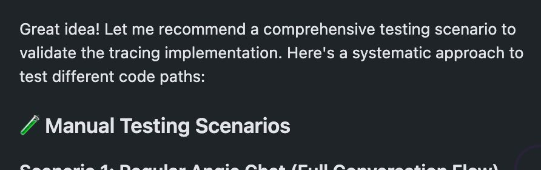

״קורסור - נהל אותי!״ מי שמבין ש-Cursor הוא גם צ׳אט, בדיוק כמו Chat GPT, אבל עם קונטקסט של הפרויקט - יכול לשפר את איכות העבודה שלו
פורסם במקור ב LinkedIn
״קורסור - נהל אותי!״ מי שמבין ש-Cursor הוא גם צ׳אט, בדיוק כמו Chat GPT, אבל עם קונטקסט של הפרויקט - יכול לשפר את איכות העבודה שלו דרמטית.
השבוע עבדתי על אינטגרציה עם כלי חיצוני לפרויקט (אמ;לק - כלי observability למערכות LLM בשם LangFuse) ומצאתי את עצמי קופץ הלוך ושוב בין הקוד לבין ה־traces כדי להבין אם מה שכתבנו באמת עובד.
כדי להשתמש ביכולות של האייג׳נט רציתי לחבר MCP ולתת לו משימה שתרוץ ותוודא שהכול מתנהג כמו שצריך. אבל לא היה כזה.
אז פניתי לצ׳אט של Cursor, וביקשתי ממנו לעזור.
הוא חיפש ברשת ואז הציע לי להריץ curl ולשלוף את ה־traces. זה עבד.
אז ביקשתי ממנו ליצור קובץ חוקים בפורמט MDC (מה שנקרא Cursor rules) שיסביר איך לעשות את מה שהוא הצליח לעשות בסוף שיחת המחקר שלנו - לשלוף את המידע. זה דרש קצת דיונים ונסיונות עד שהוא צלח את המשימה.
אז בצ׳אט חדש ונקי מקונטקסט ביקשתי ממנו להשתמש בחוק החדש כדי לשלוף את המידע, ולעבור על השינויים שעשיתי בקוד (עם פקודת @diff) ולבחון האם התוצר שהתקבל זה באמת מה שציפינו לו.
זה עבד כמו קסם - הוא זיהה פערים ותיקן את הקוד בהתאם.
וזה לא נגמר שם - ביקשתי ממנו לכתוב לי תסריט בדיקות ידני שאוכל להריץ לפי השינויים בקוד שהוא עשה כדי שנוכל לבדוק ביחד האם הכל תקין.
במקום לנחש או לנסות לחשוב בעצמי על המקרים, אני מבקש מחכמת ה-AI להפעיל אותי ולעזור לה לבדוק את האזורים בהם אני עדיין נדרש, ומחבר אליה את המידע שיעזור לה לבדוק את עצמה.
זה לא בדיוק כתיבת קוד - זה יותר כמו תהליך מתמשך של תיקוף, ניתוח, וחקירה עם שותף שיודע על מה אני עובד.
ולהבין את זה נותן לאנשי הפיתוח כח חדש:
כשמבינים ש-Cursor הוא לא רק צ׳אט גנרי, אלא כזה שחי בתוך הקוד שלך, רואה את ההיסטוריה של ה־branches, מזהה dependencies, ומכיר את הקבצים - מבינים שהוא לא עוד כלי. הוא שכבת קונטקסט.
וכשיש צ׳אט עם קונטקסט - אפשר להתחיל לנהל איתו תהליכי פיתוח ובדיקה מלאים - כדי לוודא שהקוד עושה מה שהוא אמור לעשות.
וזה אולי מה שהופך את Cursor, בשימוש נכון, לא רק לכלי לכתיבה והשלמה של קוד, אלא למנגנון שמנהל לצידך את כל תהליך הפיתוח.
